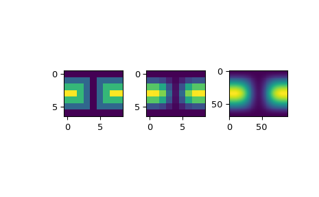

scipy.interpolate.SmoothSphereBivariateSpline¶
- class scipy.interpolate.SmoothSphereBivariateSpline(theta, phi, r, w=None, s=0.0, eps=1e-16)[source]¶
Smooth bivariate spline approximation in spherical coordinates.
New in version 0.11.0.
- Parameters
- theta, phi, rarray_like
1-D sequences of data points (order is not important). Coordinates must be given in radians. Theta must lie within the interval
[0, pi], and phi must lie within the interval[0, 2pi].- warray_like, optional
Positive 1-D sequence of weights.
- sfloat, optional
Positive smoothing factor defined for estimation condition:
sum((w(i)*(r(i) - s(theta(i), phi(i))))**2, axis=0) <= sDefaults=len(w)which should be a good value if1/w[i]is an estimate of the standard deviation ofr[i].- epsfloat, optional
A threshold for determining the effective rank of an over-determined linear system of equations. eps should have a value within the open interval
(0, 1), the default is 1e-16.
See also
BivariateSplinea base class for bivariate splines.
UnivariateSplinea smooth univariate spline to fit a given set of data points.
SmoothBivariateSplinea smoothing bivariate spline through the given points
LSQBivariateSplinea bivariate spline using weighted least-squares fitting
RectSphereBivariateSplinea bivariate spline over a rectangular mesh on a sphere
LSQSphereBivariateSplinea bivariate spline in spherical coordinates using weighted least-squares fitting
RectBivariateSplinea bivariate spline over a rectangular mesh.
bisplrepa function to find a bivariate B-spline representation of a surface
bispleva function to evaluate a bivariate B-spline and its derivatives
Notes
For more information, see the FITPACK site about this function.
Examples
Suppose we have global data on a coarse grid (the input data does not have to be on a grid):
>>> theta = np.linspace(0., np.pi, 7) >>> phi = np.linspace(0., 2*np.pi, 9) >>> data = np.empty((theta.shape[0], phi.shape[0])) >>> data[:,0], data[0,:], data[-1,:] = 0., 0., 0. >>> data[1:-1,1], data[1:-1,-1] = 1., 1. >>> data[1,1:-1], data[-2,1:-1] = 1., 1. >>> data[2:-2,2], data[2:-2,-2] = 2., 2. >>> data[2,2:-2], data[-3,2:-2] = 2., 2. >>> data[3,3:-2] = 3. >>> data = np.roll(data, 4, 1)
We need to set up the interpolator object
>>> lats, lons = np.meshgrid(theta, phi) >>> from scipy.interpolate import SmoothSphereBivariateSpline >>> lut = SmoothSphereBivariateSpline(lats.ravel(), lons.ravel(), ... data.T.ravel(), s=3.5)
As a first test, we’ll see what the algorithm returns when run on the input coordinates
>>> data_orig = lut(theta, phi)
Finally we interpolate the data to a finer grid
>>> fine_lats = np.linspace(0., np.pi, 70) >>> fine_lons = np.linspace(0., 2 * np.pi, 90)
>>> data_smth = lut(fine_lats, fine_lons)
>>> import matplotlib.pyplot as plt >>> fig = plt.figure() >>> ax1 = fig.add_subplot(131) >>> ax1.imshow(data, interpolation='nearest') >>> ax2 = fig.add_subplot(132) >>> ax2.imshow(data_orig, interpolation='nearest') >>> ax3 = fig.add_subplot(133) >>> ax3.imshow(data_smth, interpolation='nearest') >>> plt.show()
 Methods
__call__(theta, phi[, dtheta, dphi, grid])Evaluate the spline or its derivatives at given positions.
ev(theta, phi[, dtheta, dphi])Evaluate the spline at points
Return spline coefficients.
Return a tuple (tx,ty) where tx,ty contain knots positions of the spline with respect to x-, y-variable, respectively.
Return weighted sum of squared residuals of the spline approximation: sum ((w[i]*(z[i]-s(x[i],y[i])))**2,axis=0)